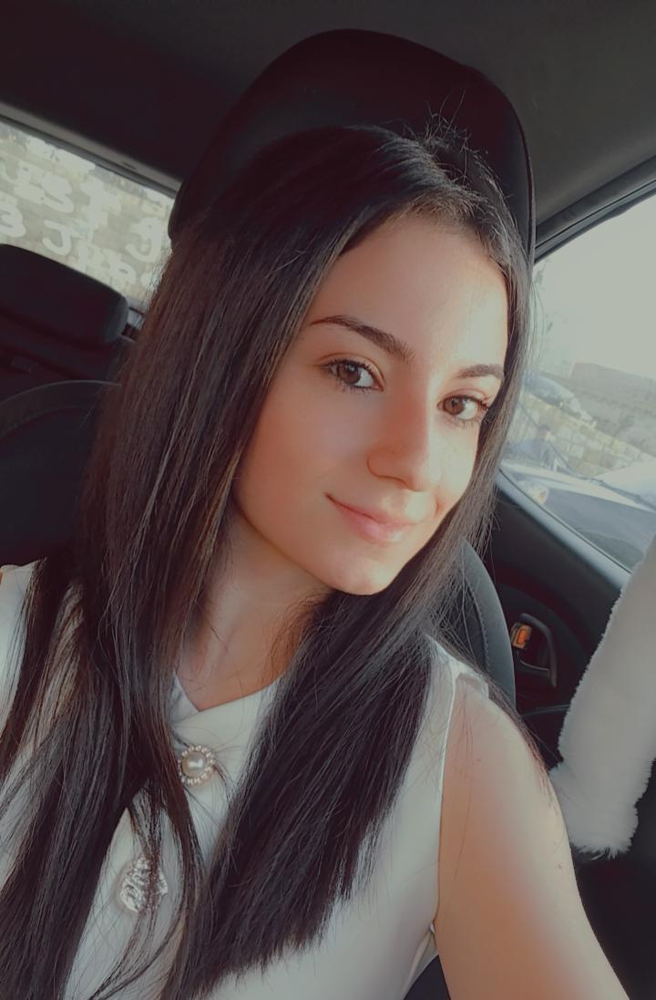

Get to know me !

Who Am I ?
My name is Térésa Farhat, and I am currently a fourth-year Computer and Communication Engineering
student,
specializing in Software Engineering.
I am passionate about technology and programming, and I always
try
to approach new challenges with a positive attitude and a willingness to learn and improve.
My Skills
I have developed a strong combination of technical and soft skills through my studies and
experiences.
I am familiar with Python, C++, MATLAB, relational databases, and Unix, while also developing my
knowledge
of web development.
Alongside my technical abilities, I value teamwork, communication,
attention to detail, and problem solving, which help me work effectively
My Goals
In the future, I hope to gain professional experience, and become a skilled software engineer who can create useful and innovative solutions.